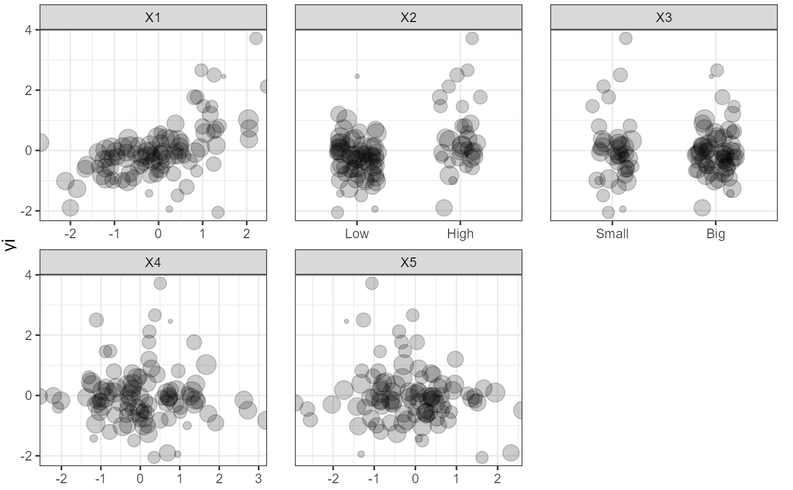
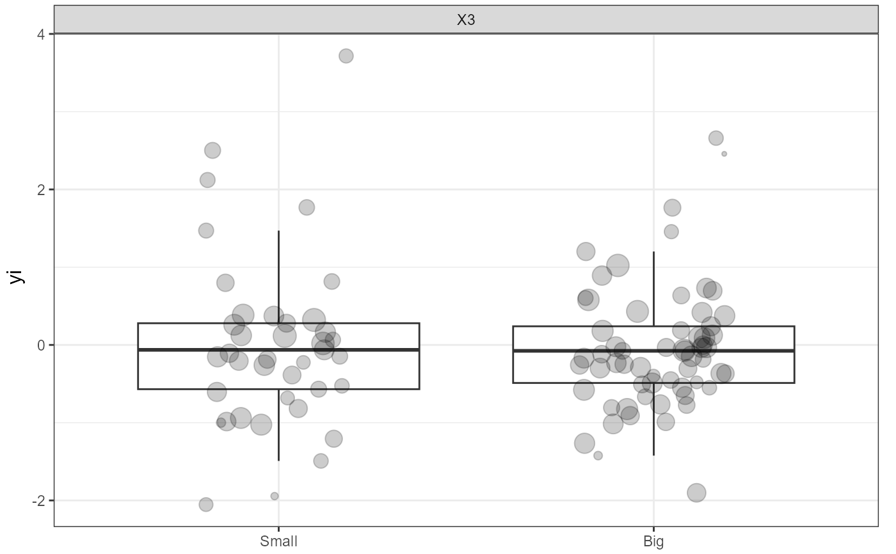

WeightedScatter.RdPlots weighted scatterplots for meta-analytic data. Can plot effect size as a function of either continuous (numeric, integer) or categorical (factor, character) predictors.
WeightedScatter(data, yi = "yi", vi = "vi", vars = NULL, tau2 = NULL, summarize = TRUE)
| data | A data.frame. |
|---|---|
| yi | Character. The name of the column in |
| vi | Character. The name of the column in the |
| vars | Character vector containing the names of specific moderator
variables to plot. When set to |
| tau2 | Numeric. Provide an optional value for tau2. If this value is provided, random-effects weights will be used instead of fixed-effects weights. |
| summarize | Logical. Should summary stats be displayed? Defaults to FALSE. If TRUE, a smooth trend line is displayed for continuous variables, using [stats::loess()] for less than 1000 observations, and [mgcv::gam()] for larger datasets. For categorical variables, box-and-whiskers plots are displayed. Outliers are omitted, because the raw data fulfill this function. |
A gtable object.
set.seed(42) data <- SimulateSMD(k_train = 100, model = es * x[, 1] + es * x[, 2] + es * x[, 1] * x[, 2])$training data$X2 <- cut(data$X2, breaks = 2, labels = c("Low", "High")) data$X3 <- cut(data$X3, breaks = 2, labels = c("Small", "Big")) WeightedScatter(data, summarize = FALSE)#> pdf #> 2